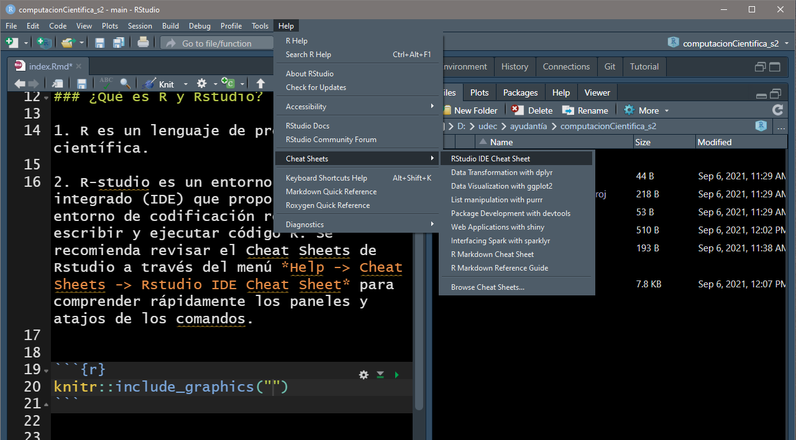
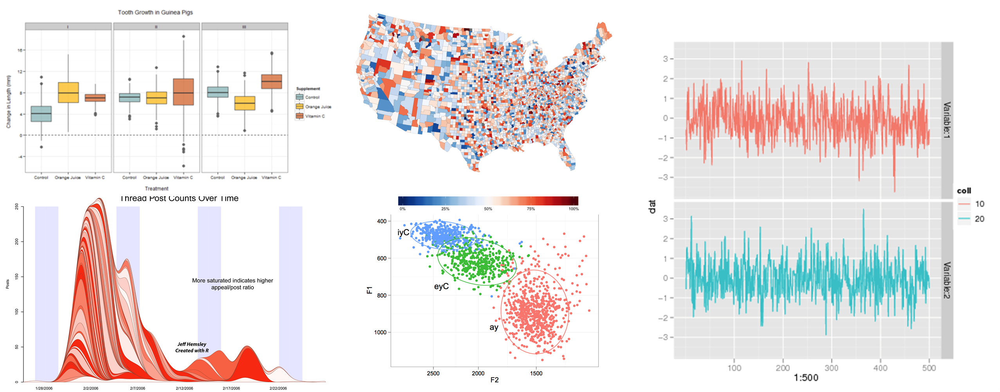
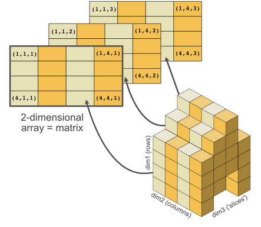
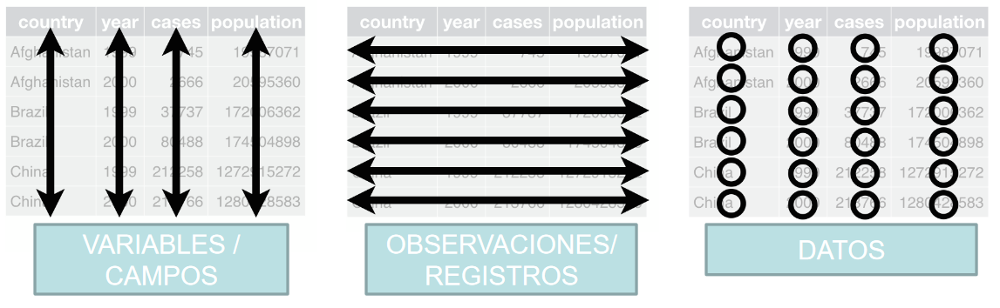

Introducción a R
Objetivos
Definir los términos relacionados a R: Objetos, asignación, funciones, argumentos, opciones.
Crear objetos y asignarles valores en R
Aprender como nombrar objetos
Guardar un archivo de script para su uso posterior.
Usar comentarios para detallar un script
Resolver operaciones aritméticas simples en R
Llamar funciones y usar argumentos para cambiar el comportamiento por “default”
Inspeccionar y manipular el contenido de vectores
Extraer datos de interés desde un vector
Analizar vectores con valores NAs
Conceptos generales
R es un lenguaje de programación científica.
R-studio es un entorno de desarrollo integrado (IDE) que proporciona un entorno de codificación robusta para escribir y ejecutar código en R. Se recomienda revisar el Cheat Sheets de Rstudio a través del menú Help -> Cheat Sheet -> Rstudio IDE Cheat Sheet para comprender rápidamente los paneles y atajos de los comandos.

Ventajas de R
- !Es gratis y trabaja en múltiples plataformas!

Es un comando de programación
Gráficos y visualización a nivel profesional.

Un solo software para diferentes tipos de análisis. Miles de análisis estadísticos clásicos y modernos se encuentran disponibles en R.
Automatización de metodologías. Con R, la realización de un procedimiento y/o ordenamiento de la data mediante un script no necesita crearse cada vez que se inicia el programa. ¡Es automático!
Acceso a técnicas recientemente desarrolladas o en desarrollo permanente por la comunidad científica mundial.
No hay límites. Si no se encuentra lo que se busca, uno mismo puede construirlo.
Objetos de R
Nosotros podemos realizar múltiples cálculos en R simplemente escribiendo alguna operación matemática en la consola.
10 + 20
12/4
4*20
log(10)Sin embargo, para hacer útil e interesante este proceso, en R se
pueden asignar valores a un objeto. Un objeto en R
básicamente es un contenedor de datos al cual se le asigna un nombre en
particular. En R para crear un objeto es obligatorio asignarle un nombre
seguido de un operador de asignación <- y un dato de
interés. Por ejemplo:
# Formato:
# nombre objeto + operador asignación (<-) + dato
dato_double <- 17.5
dato_integers <- 19
dato_booleano <- TRUE
dato_character <- "sarda chiliensis" El símbolo <- asigna valores de la derecha a los
objetos de la izquierda. Por ejemplo, después de ejecutar
x <- 50, el valor de x es 50.
Por razones históricas, se puede usar también el símbolo =
como operador de asignación pero este no funciona en cierto contextos
dado que existen ligeras
diferencias en su sintaxis. Un buena práctica con este lenguaje de
programación es acostumbrarse a emplear siempre el operador
<- para la asignación de objetos. En Rstudio, el
operador <- se puede obtener rápidamente presionando a
la vez la tecla alt y -.
Los objetos pueden tener cualquier nombre como x,
temperatura, desembarques o
especie_genero (existen ciertas excepciones). Es
conveniente que los nombres de los objetos sean explícitos y no
demasiado largos. Ellos no pueden iniciar con números (5x
no es válido pero si x5). Otro aspecto importante a
considerar es que R distingue entre minúsculas y mayúsculas (Ej, el
objeto desembarque será diferente a otro denominado
Desembarque). Así mismo, existen algunos nombres que si
bien son permitidos no son recomendables utilizarlos dado a que son
objetos o funciones fundamentales de R (Ej. mean,
if, else, df, otro).Se
recomienda usar sustantivos para nombres de objetos y verbos para las
funciones. En R es muy importante mantener la consistencia en la
codificación (mayusculas, minusculas, guiones) ya que esto hace que ti
código sea más fácil de leer para ti y tus futuros colaboradores. Los
estilos de codificación más populares en R es la de Google, Jean Fan y tidyverse. El estilo de
codificación tidyverse es muy completa y puede parecer
abrumadora al principio pero resultará muy útil una vez que lo
domines.
En Rstudio, cuando asignamos un valor a un objeto es necesario
ejecutar este proceso. Para ello debemos presionar el boton
run ubicada en la esquina superior derecha del editor de
código o usar la combinación de teclas ctrl + enter. Para
acceder a los resultados es necesario escribir el nombre del objeto en
la consola.
# Acceso a los resultados
talla_cm <- 10
talla_cm
# Otra forma de acceder a los resultados
(talla_cm <- 10) # los resultados se muestran usando paréntesisAhora que creamos el objeto talla_cm, este se encontrará
en almacenada en la memoria de R (ver la pestaña de environment). Esto
resulta útil porque podremos realizar rápidamente operaciones
aritmeticas. Por ejemplo, si deseamos convertir las tallas de
centímetros a milímetos (1 centímetro equivale a 10 milímetros) hacemos
lo siguiente:
talla_cm * 10Comentando un script
Todos los lenguajes de programación pueden incluir comentarios en sus
códigos. Esto es muy útil porque nos permite recordar las decisiones o
procesos ejecutados en un momento en particular. Para comentar un script
en R debemos emplear el operador #. Todo lo que se
encuentre a la derecha de # y hasta el final de la línea
será reconocido por el software como un comentario.
talla_cm <- 10 # talla en centimetros
talla_mm <- talla_cm * 10 # talla en milímetrosEn Rstudio comentar o descomentar un párrafo es muy sencillo: después
de seleccionar las líneas que desea comentar, pulse al mismo tiempo la
combinación de teclas ctrl + shift + c.
Funciones y argumentos
Las funciones son “scripts enlatados” que ejecutan un conjuntos de
comandos más elaborados. Muchas funciones están predefinidas, o pueden
estar disponibles importando paquetes de R (más adelante). Una función
puede requerir una o más entradas llamadas argumentos. Las funciones a
menudo (pero no siempre) devuelven un valor. Un ejemplo típico sería la
función sqrt(). El “input” debe ser un número, y el valor
de retorno (“output”) es la raíz cuadrada de ese número.
a <- 145
b <- sqrt(a)Aquí, el valor del objeto b esta dado por la raíz
cuadrada del valor de a. La función sqrt()
calcula la raíz cuadrada y el resultado se almacena en el objeto
b. Esta es una función simple dado que sólo se ingresa un
argumento.
El “valor” de retorno de una función no tiene por qué ser numérico, y tampoco tiene por qué ser un único elemento: puede ser un conjunto de cosas, o incluso un conjunto de datos. Lo veremos cuando leamos archivos de datos en R.
Los argumentos pueden ser cualquier cosa, no sólo números o nombres
de archivos, sino también otros objetos. El significado exacto de cada
argumento difiere según la función, y debe buscarse previamente en la
documentación. Algunas funciones presentan argumentos que son
especificados por el usuario o, si se omiten, toman un valor por
defecto. Los argumentos se emplean usualmente para modificar el
comportamiento de una función, como por ejemplo: ignorar valores
perdidos (NA). Probemos una función que contenga múltiples
argumentos: round().
round(3.14159)Aquí, hemos llamado a la función round() con un solo
argumento, 3.14159, y ha devuelto el valor 3. Eso es porque el valor por
defecto es redondear al número entero más cercano. Si queremos más
dígitos debemos especificarlo en uno de sus argumentos. Si no conocemos
los argumentos que requiere una función podemos consultarlo en el
documento de ayuda o escribir directamente en la consola el signo “?”
junto con la función deseada (?round())
# Nombre del argumento
round(3.14159, digits = 2)
# No requiere nombrar el argumento si este encuentra en el mismo orden definido
round(3.14156, 2)
# Si nombras los argumentos, puedes cambiar el orden
round(digits = 2, 3.14159)Es una buena práctica especificar los nombres de todos los argumentos de una función. Si no lo haces, alguien que lea tu código podría tener que buscar la definición de cada función y sus argumentos para entender lo que estás haciendo.
Estructura de datos
Cuando utilizamos R, estamos manipulando objetos que contienen datos. Estos pueden ser de diferentes tipos. Algunos de los más básicos son:
Valores decimales
4.5son llamados doubles. Pueden ser usados en operaciones matemáticas.Números enteros como 10 son llamados integers. Los números enteros y decimales son llamados también como numerics.
Valores booleanos (
TRUEoFALSE) son denominados logical. Representan una condición.Los cadenas de textos (ej. “concha negra”) son llamados characters. Estos son reconocidos porque inician y terminan con comillas(
").Valores perdidos y vacíos, representa la ausencia de datos (
NA, NA_integer_, NA_real_, NA_character).
La forma en cómo estructuramos estos datos les confiere ciertas características o propiedades que las distinguen entre sí. Por ejemplo, el número de dimensiones (1d, 2d) o por el tipo de dato que almacenan (homogéneo o heterogéneo). En general, cinco son las estructuras de datos más utilizadas en los análisis.
| Dimensiones | Homogeneas | Heterogéneas |
|---|---|---|
| 1 | Vector | Lista |
| 2 | Matriz | Dataframe |
| n | Array |
|
Vector
Es la estructura de dato más común en R. Un vector esta compuesto por una serie de valores que pueden ser numericos o caracteres.
Una importante características de esta estructura de dato es que
todos sus elementos deben ser del mismo tipo. Un vector es usualmente
creado con la funcione c().
# Función concatenar c()
zonas_pesca <- c("paita", "pisco", "ilo")Existen varias funciones que te permiten explorar el contenido de un
vector. Por ejemplo, la función length() te permite conocer
el número de elementos dentro de un vector, class() te
permite identificar la clase (tipo de elemento) de un objeto,
str() te permite identificar la estructura de un objeto y
sus elementos (esta función resulta de mucha utilidad cuando trabajas
con bases de datos).
length(zonas_pesca) # tamaño del vector
class(zonas_pesca) # clase del vector
str(zonas_pesca) # Estructura del vectorTambién puedes usar la función c para adicionar otros
elementos a un vector
peces <- c("bonito","perico", "atun")
peces <- c (peces, "caballa") # adiciona un elemento al final del vector.
peces <- c("mero", peces) # adiciona un elemento al inicio del vector.En la primera línea creamos el vector original denominado peces. Luego añadimos - al final del vector - el elemento “caballa” y guardamos el resultado de nuevo en el objeto peces. Finalmente, añadimos - al principio del vector - el elemento “mero” y guardamos el resultado en el objeto peces. Este procedimiento se puede hacer varias veces para hacer crecer un vector o crear un conjunto de datos. Cuando programamos esto puede ser de utilidad para añadir los resultados que vamos calculando.
Consideración importantes para trabajar con vectores
1. ¿Cómo se pasa de un tipo de vector a otro y cuándo se hace automáticamente?
Coerción. Como mencionamos anteriormente un vector
debe contener elementos de la misma clase (numérica, logica, entre
otros). Sin embargo, cuando esto no ocurre el software automáticamente
optará por la clase más flexible. Las clases de datos de menor a mayor
flexibilidad son:
logical < integer < double < character. Por
ejemplo, el resultado de combinar un dato del tipo caracter con otro
entero será un vector del tipo caracter.
# Vector numérico
entero <- seq(from = 1, to = 10, by= 2)
# Vector caracter
caracter <- sample(letters, 5)
# Uniendo vectores
nuevo <- c(entero, caracter)Otro punto a tener en cuenta es que cuando un vector lógico es
coercionado a una clase integer o double, los
TRUE se convierten en 1 y los FALSE en 0. Esto
resulta muy útil en operaciones como suma (sum()) y/o
promedio (mean).
# Transformación a un vector del tipo numérico
logico <- c(FALSE, FALSE, TRUE, TRUE, TRUE)
as.numeric(logico)
# Número total de valores TRUE
sum(logico)2. ¿Qué pasa cuando trabajas con vectores de diferentes tamaños?
Normas de reciclaje. Además de coercionar implícitamente los tipos de vectores para que sean compatibles, R también coerciona implícitamente la longitud de los vectores. Esto se llama reciclaje de vectores, porque el vector más corto se repite, o se recicla, hasta alcanzar el tamaño del vector más largo.
1:10 + 100## [1] 101 102 103 104 105 106 107 108 109 110# ¿Que pasa con esta suma?
1:10 + 1:23. ¿Cómo nominar los elementos de un vector?
Todos los vectores pueden ser nominados. Esto puede realizarse
durante su creación con la función concatenar c() o usando
la función names().
# Nominando vectores con c()
x <- c(a = 1, b = 2, c = 4)
# Nominando vectores con names()
y <- 1:3
names(y) <- c("a", "b", "c")4. ¿Cómo manipular los elementos de interés de un vector?
Si queremos extraer uno o varios valores de un vector, debemos
proporcionar uno o varios índices entre corchetes ([]) y se
usa mediante x[a]. Por ejemplo:
bitacora <- c("desembarque", "especie", "zona")
# Los números enteros corresponden a las posiciones de los elementos
# que se quieren extraer teniendo en cuenta la posición de la fila y
# columna (en ese orden).
bitacora[1]
bitacora[c(1,3)]
# Valores negativos remueven elementos
bitacora[-1]Otra manera de extraer datos es usando vectores lógicos.
TRUE seleccionará el elemento con el mismo indice, mientra
que FALSE no será seleccionado.
desembarque <- c(120, 165, 220, 135)
desembarque[c(TRUE, FALSE, TRUE, FALSE)]Usualmente, estos vectores lógicos no se escriben a mano si no que son salidas de otras funciones o pruebas lógicas. Por ejemplo, si quieres seleccionar los desembarques superiores a 200 hacemos lo siguiente:
# Retorna un vector lógico. El valor TRUE es el elemento
# que cumple la condición.
desembarque > 200
# Retorna el valor de la posición del vector desembarque
# que cumple la condición.
desembarque[desembarque > 200] # Creando un vector
x <- c(10, 3, NA, 5, 8, 20, NA)
# Todos los valores NA del objeto x
x_na <- is.na(x)
# El símbolo ! invierte los valores verdadero/falso
# Obtenemos todos los valores que no son NA
x[!x_na]También se puede combinar múltiple operaciones usando
& (ambas condiciones son verdades, AND) o
| (al menos un elemento es verdadero, OR).
desembarque[desembarque < 130 | desembarque > 160]
desembarque[desembarque >= 130 & desembarque <= 170]En este ejemplo, los símbolos < significa “menor
que”, > “mayor que”, >= “mayor o igual
que” y == “igual a”. El doble signo de igualdad (==) es una
prueba de igualdad numérica entre el lado izquierdo y derecho, y no debe
confundirse con el operador de asignación simple (=). Otro
operador de mucha utilidad es %in% el cual permite evaluar
si un elemento de un vector “x” se encuentra en el vector “y”.
peces
peces %in% c("bonito")Tenga en cuenta que el vector resultante tiene la misma longitud que
el vector de búsqueda de la izquierda, porque el operador
%in% comprueba si cada elemento del vector de búsqueda se
encuentra en algun lugar del vector destino. Por lo tanto, se puede
utilizar %in% para seleccionar los elementos del vector de
búsqueda que aparecen en el vector de destino.
peces <- c(peces, "pintadilla", "cabrilla", "chita", "lorna", "pejerrey")
peces %in% c("chita", "pejerrey", "atun")
peces[peces %in% c("chita", "pejerrey", "atun")]Atributos
Todos los objetos en R pueden tener atributos adicionales utilizados
para almacenar metadatos. Los atributos se pueden establecer y acceder
individualmente con la función attr() o todos a la vez con
attribute por ejemplo:
temp <- c(17.4, 18.3, 16.5, 28.1, 18.4)
# El metadato es usualmente escrito en el
# encabezado de un documento excel o
# en otra hoja, pero puede ser colocado
# como atributo en R
attr(temp, "unit") <- "°C"
attr(temp, "infomuestreo") <- "Temperatura superficial (10m prof), medidos con CTD"
attributes(temp)Los tres atributos más importantes son:
Nombre, un vector de caracteres que da un nombre a cada elemento.
Dimensión, utilizado para convertir vectores en matrices o arrays.
Clase, utilizado para implementar el sistema de objetos S3.
Cada uno de estos atributos tiene una función específica para obtener
y establecer valores (names(), length(), class).
names(temp) <- c("st_03", "st_11", "st_17", "st_21", "st_25")
templength(temp)class(temp)Un importante uso de los atributos es para definir factores. Los factores son vectores que pueden contener valores predefinidos. Frecuentemente son usados para almacenar datos categóricos. Estos tiene dos atributos:
- la clase, "factor", lo cual lo hace que tenga un comportamiento diferente a otros vectores.
- y los **niveles**, lo cual define el conjunto de valores permitidos.biomasa <- factor(c("baja", "media", "baja", "alta", "baja", "media", "media"))
biomasaclass(biomasa)# Los niveles se muestran en orden alfabetico si no es especificado.
levels(biomasa)Operaciones vectoriales
Las operaciones aritméticas y relacionales pueden vectorizarse, es decir, si aplicamos a un vector ciertas operaciones, éstas se realizarán para cada uno de los elementos que contiene dicho vector.
a <- c(1, 2, 3, 4)
c <- (a + sqrt(a))/exp(2) + 1
ca <- c(1, 2, 3, 4)
b <- 10 # b se recicla a la longitud de aa + b
a * bArrays y Matrices
Si un vector contiene múltiples dimensiones es conocido como arrays. Un caso especial de arrays es la matriz. Las matrices pueden ser descritas como vectores de dos dimensiones y son usadas comúnmente como parte de la estadística matemática. Los arrays son mucho más raras. pero vale la pena tenerlas en cuenta.

Las matrices pueden ser creadas con la función matrix()
- la cual acepta dos argumentos nrow y ncol en
donde se especifica el número de filas y columnas respectivamente - o
combinando vectores (de igual
longitud) a una matriz usando cbind().
# Especificando filas y columnas
matrix(1:18, ncol = 3, nrow = 6)## [,1] [,2] [,3]
## [1,] 1 7 13
## [2,] 2 8 14
## [3,] 3 9 15
## [4,] 4 10 16
## [5,] 5 11 17
## [6,] 6 12 18# Uniendo vectores a una matrix con cbind
v1 <- 1:3
v2 <- 4:6
a <- cbind(v1, v2)Algunas funciones útiles cuando se trabaja con matrices son
length(), names(), nrow(),
ncol(), rownames(), colnames() y
dim(), dimnames() para arrays.
length(a)nrow(a)ncol(a)colnames(a) <- c("A", "B")
rownames(a) <- c("a", "b", "c")Extracción de datos en matrices y arrays
La forma más común de extraer datos de una matriz es una simple generalización de cómo lo hicimos con los vectores. La única diferencia será que ahora tendremos dos dimensiones: filas y columnas. Por lo que al momento de querer extraer un dato debemos indicarle al objeto la posición de la fila y columna deseada. Por ejemplo:
# Creamos el objeto a
a <- matrix(1:9, nrow = 3)
# Asignamos un nombre
colnames(a) <- c("A", "B", "C")
# Extraemos datos
# objeto[Nro fila, Nro columna]
a[1:2,2]
# ¿Que valor obtienes?
a[, c("A","B")]Dataframe
Son estructuras de datos de dos dimensiones que pueden almacenar datos de diferentes tipos (clases), por tanto son heterogéneas. Es la más usada para los análisis de datos.

Para crear un estructura de datos del tipo dataframe empleamos la
función data.frame(). Recordemos que un dataframe esta
compuesto por vectores.
# Creamos el dataframe
df <- data.frame(x = 1:3, y = c("a", "b", "c"))
# Observamos la estructura del dataframe
str(df)Al igual que una matriz, los datos pueden ser seleccionados de la siguiente manera:
df[1:2, 1] # filas 1-2, columna 1
df$x # muestra todos los elementos de la columna x
df$y[2] # muestra el 2do elemento de la columna y# EJERCICIO
# Generar un dataframe
# 4 variables con diferentes tipos de datos (logicos, caracter, double, entero)
# El tamaño del dataframe será de 20
# Asignar un nombre a cada variable# Explora la base de datos iris de R
# 1. ¿Qué tipo de estructura de dato tiene?
# 2. ¿Cuál es la dimensión de la base de datos iris?
# 3. ¿Qué tipos de datos básicos contiene el conjunto de datos iris?
# 4. Calcula la suma de todas las observaciones del dataframe usando la función sum()Comparten las mismas propiedades que una matriz y lista. Algunas
funciones útiles son names(), colnames(),
rownames(), length() (representa el número de
columnas), nrow() para obtener el número de filas.
Los datos se acomodaran en el orden de arriba - abajo y de izquierda a derecha. Es importante mencionar que si el número de elementos es mayor a las celdas de la matriz, se acomodarán todos los datos posibles y los demás serán omitidos.
# Elvector contiene 12 elementos pero la matriz solo 9 celdas
matrix(1:12, nrow = 3, ncol = 3)Si por el contrario, el número de celdas es mayor al número de elementos, estos se reciclaran sin antes advertirnos. Luego R empezará a usar los elementos a partir del primero de ellos.
matrix(1:18, nrow = 6, ncol = 4)Valores pedidos
Dado que R fue diseñado para analizar conjuntos de datos, incluye el
concepto de datos perdidos (algo poco común en otros lenguajes de
programación). Los datos perdidos se representan en los vectores como
NA.
Al realizar operaciones con números, la mayoría de las funciones devolverán NA si los datos con los que se trabaja incluyen valores perdidos. Esta característica hace que sea más difícil hacer caso omiso a los valores NAs. Puede añadir el argumento na.rm=TRUE para calcular el resultado ignorando los valores perdidos.
rooms <- c(2, 1, 1, NA, 7)
mean(rooms)## [1] NAmax(rooms)## [1] NAmean(rooms, na.rm = TRUE)## [1] 2.75max(rooms, na.rm = TRUE)## [1] 7Si sus datos incluyen valores perdidos, es posible que quiera familiarizarse con las funciones is.na(), na.omit() y complete.cases(). A continuación encontrará ejemplos.
## Extrae los elementos que no son NA
rooms[!is.na(rooms)]## [1] 2 1 1 7## Cuenta el número de valores NAs
## El resultado de is.na() es un vector lógico (TRUE/FALSE equivalente a 1/0) por lo que la función sum() cuenta el total de valores NAs del vector.
sum(is.na(rooms))## [1] 1## Devuelve el objeto sin los elementos NAs
na.omit(rooms)## [1] 2 1 1 7
## attr(,"na.action")
## [1] 4
## attr(,"class")
## [1] "omit"## Extrae todos los elementos de un vector que tienen asignado un valor.
rooms[complete.cases(rooms)]## [1] 2 1 1 7# x <- 1:10000
# set.seed(123) # so we get all the same results
# y <- sample(1:10000, 1) # random number of NAs
# z <- sample(1:10000, y) # randomly assign positions of the y NAs
# x[z] <- NA
#
# sum(is.na(x))
# How many NAs are in x?